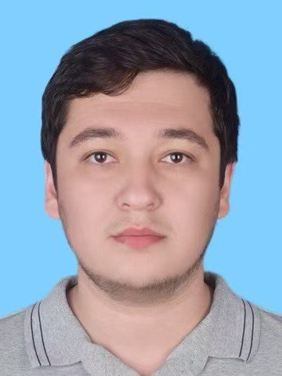

Dayanch Qurban
Logistics Specialist & Architect
Professional Path
Experience: Logistics Manager
Managing complex international supply chains and logistics optimization with a focus on efficiency.
Education: Product Design
Focused on functional aesthetics and manufacturing processes.
Education: Architect
Degree in Architecture and Urban Planning.